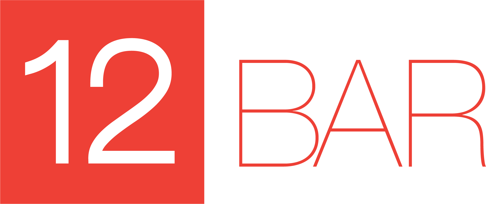

Welcome to

The eaisiest way to create and share
chord charts and set lists!
Login with Facebook
We recommend logging in with FaceBook so you can share stuff with your friends!
Login with Email
No Thanks!
I’ll Log in later